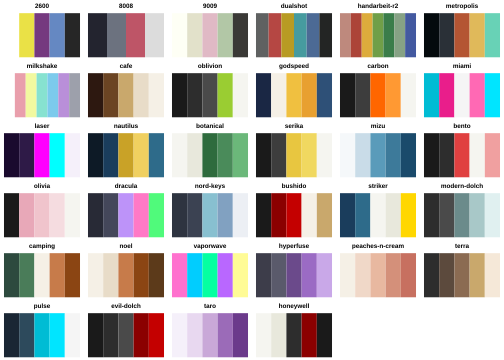
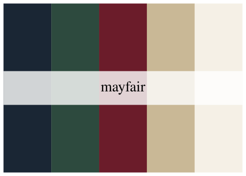
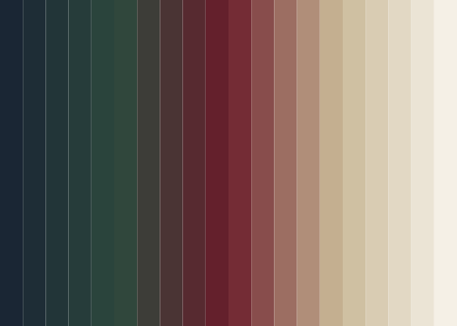
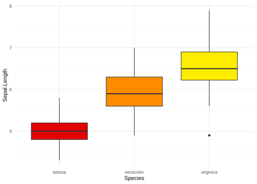
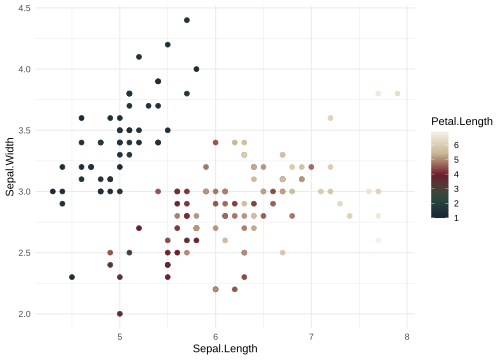
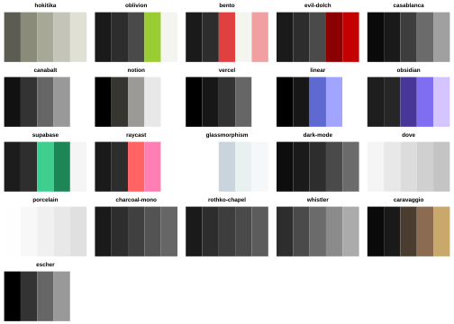

A collection of 284 color palettes for data visualisation, ported from the palette collection at delphi.tools — a suite of privacy-respecting, browser-based design tools created by delphi. All palette designs are delphi’s; this package just makes them usable from R.
Installation
You can install the development version of delphiPalettes from GitHub with:
# install.packages("pak")
pak::pak("ConnorB/delphiPalettes")A quick look
print_delphi_palettes() draws a grid of palette swatches, one panel per palette. Pass a category or colorblind_friendly = TRUE to see a manageable slice of the collection:
print_delphi_palettes("keycaps")
That’s the keycaps category (34 palettes); there are 284 in total across ten categories. Leave category unset to grid the whole collection at once (a large plot).
Usage
Every palette has a lowercase, hyphenated name, like "mayfair" or "grand-budapest". delphi_palette() returns one as a character vector of hex colors:
delphi_palette("mayfair")
#> [1] "#1a2634" "#2d4a3e" "#6b1c2a" "#c9b896" "#f5f0e6"print_delphi_palette() draws it:
print_delphi_palette("mayfair")
Reverse the color order with direction = -1, or take a subset with n:
delphi_palette("grand-budapest", direction = -1)
#> [1] "#f0c040" "#7b2d5b" "#f5e6d3" "#9c4070" "#d4658f"
delphi_palette("pride", n = 3)
#> [1] "#e40303" "#ff8c00" "#ffed00"Interpolate a palette to any number of colors with type = "continuous":
continuous <- delphi_palette("mayfair", n = 20, type = "continuous")
continuous
#> [1] "#1A2634" "#1E2D36" "#223538" "#263C3A" "#2A443C" "#30473C" "#3D3D38"
#> [8] "#4A3434" "#572A30" "#64202C" "#742C35" "#884D4C" "#9C6E62" "#B08E79"
#> [15] "#C4AF90" "#CFC0A2" "#D9CCB3" "#E2D8C4" "#EBE4D5" "#F5F0E6"
Use with ggplot2
Discrete scales (scale_color_delphi_d() / scale_fill_delphi_d()) extend a palette by interpolation if there are more levels than colors; continuous scales (scale_color_delphi_c() / scale_fill_delphi_c()) interpolate smoothly. scale_colour_*() spellings are provided as aliases.
library(ggplot2)
ggplot(iris, aes(Species, Sepal.Length, fill = Species)) +
geom_boxplot() +
scale_fill_delphi_d("pride") +
theme_minimal() +
theme(legend.position = "none")
ggplot(iris, aes(Sepal.Length, Sepal.Width, color = Petal.Length)) +
geom_point(size = 2) +
scale_color_delphi_c("mayfair") +
theme_minimal()
Categories
Palettes are grouped into ten categories — classic, nature, keycaps, vintage, modern, bold, soft, monochrome, seasonal, and artistic. Pass one to delphi_palettes() to see just that group:
names(delphi_palettes("keycaps"))
#> [1] "2600" "8008" "9009" "dualshot"
#> [5] "handarbeit-r2" "metropolis" "milkshake" "cafe"
#> [9] "oblivion" "godspeed" "carbon" "miami"
#> [13] "laser" "nautilus" "botanical" "serika"
#> [17] "mizu" "bento" "olivia" "dracula"
#> [21] "nord-keys" "bushido" "striker" "modern-dolch"
#> [25] "camping" "noel" "vaporwave" "hyperfuse"
#> [29] "peaches-n-cream" "terra" "pulse" "evil-dolch"
#> [33] "taro" "honeywell"Colorblind-friendly palettes
Every palette has been checked with colorblindcheck for whether it stays distinguishable under simulated deuteranopia, protanopia, and tritanopia. delphi_palette_colorblind() reports the verdict for one palette, and delphi_palettes(colorblind_friendly = TRUE) filters to only the 21 palettes that pass all three:
delphi_palette_colorblind("dove")
#> [1] TRUE
delphi_palette_colorblind("pinata")
#> [1] FALSE
print_delphi_palettes(colorblind_friendly = TRUE)
Credit
The palette designs in this package are not original work — they’re ported from the palette collection built into delphi.tools (source), created by delphi (Ruby Morgan Voigt). delphiPalettes just packages that collection for use in R (retrieval, interpolation, and colorblind-safety checks); all credit for the palettes themselves belongs to the original designer. delphitools is MIT licensed; its licence notice is reproduced alongside this package’s own in LICENSE.md.